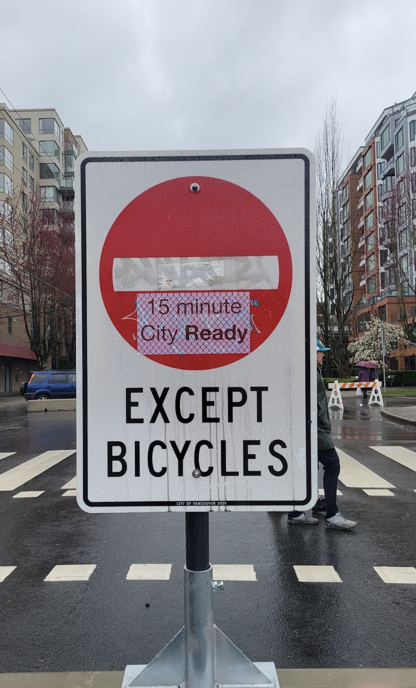
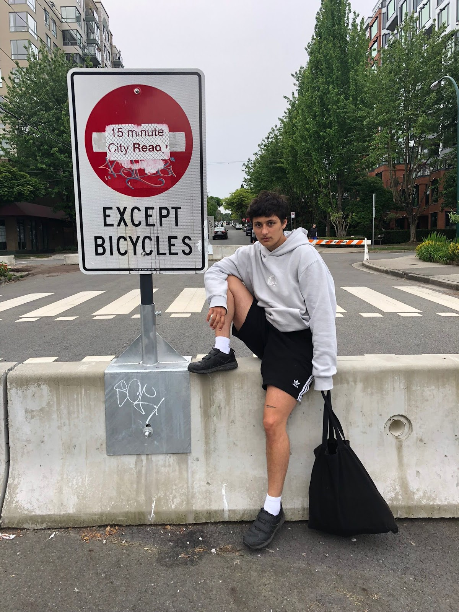
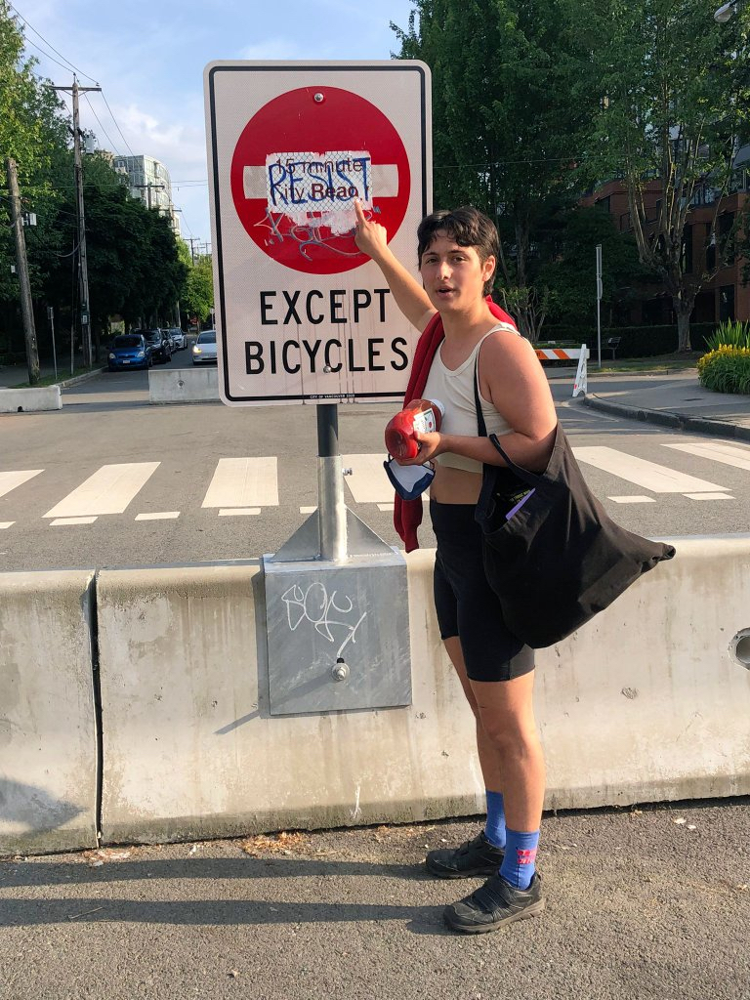
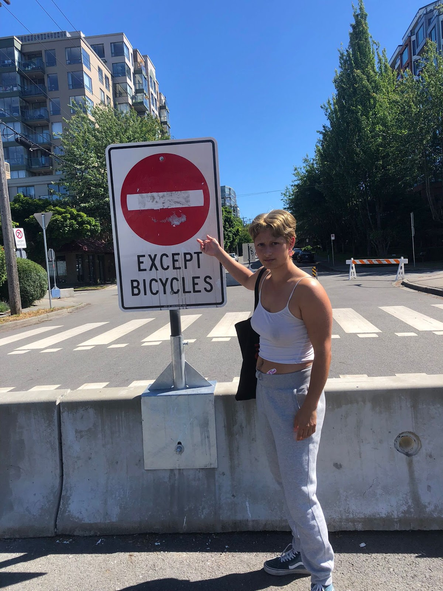

GRANVILLE BRIDGE
Pressing my chest against the Granville Bridge I feel at once its trembling vibration and my own heart’s rapid beating. I embody a sonic superposition: vibrational waves overlap; interfere; combine. The rhythm of their resulting wave marks a pattern of interference, also called a diffraction pattern. Through visceral encounter, I become entangled with the infrastructure which, heretofore, I had approached only as an instrument from whose abstracting vantage I could conduct rhythmanalysis of the field below.
AMAZON VAN
In January 2023 I first became aware of the Amazon Van’s backup sound. It’s unlike any vehicle beepI’ve ever heard. Short and aggressive, it's like the grunt of a rooting pig. It’s so distinctive that no matter how far away the van and faint the sound, my ears will sense it and immediately associate sound to source. I involuntarily think of Amazon like 6 times a day now.
SIGNS OF PROTEST
Deep mapping (including practicing rhythmanalysis and reading Karen Barad through my praxis) has honed my ability to recognize patterns of similarity and difference, or marks of interference. Lately I’ve been lured by the drift of sticker-signs and graffiti-tags around the city. Among other variously elusive signs, I've been tracing these `15 minute City Ready` stickers that I began noticing in March around the Vancouver greenway, a stretch of old railroad converted into a designated bike path. Over the course of the spring more stickers appeared, pasted over DO NOT ENTER EXCEPT BICYCLES signs and those yellow/black striped hazard markers. At the same time as the stickers began proliferating east, west, and even across the bridge into downtown, they also began being scratched off. Reapplication, however, was swift. Then I sighted something different: at first one then two sites, scrawled in blue sharpie over `15 minute City Ready` was the declaration RESIST.




But resist what? The `15 minute City Ready` stickers are actually in protest of the ‘15 minute city’––the decal’s chain-link background representing enforced limited mobility. The location and surface of the stickers placement is therefore significant to making matter the intended message. The signification of protest comes to matter through the stickers’ material-semiotic interference with (infrastructural) boundary demarcations. City signs become palimpsests––sites of super/im/position signaling contested urbanisms.
I sighted the first sticker just days after being introduced to the ‘15 minute city’. Conceptualized by Carlos Moreno, “the idea is that cities should be designed or redesigned so that within the distance of a 15-minute walk or bike ride, people should be able to live the essence of what constitutes the urban experience: to access work, housing, food, health, education, culture and leisure.” At the same time, I was also reviving a workshop on building a Walkability Index using GIS as part of my job in university library’s research commons. This led me to think about how proximity and connection in the city are measured, imagined, and experienced. What are the processes of datafication that determine ‘input values’ and ‘walkability scores’? To the workshop’s description of network analysis I included the invitation to ponder: In what ways do walkability indexes render partial representations? Who and what is not accounted for by the data?
Although similar in symbolic, the ‘one-minute city’ project in Sweden is interested in collaborative reconfigurations of urban streets immediately outside inhabitants doorsteps promote public engagement (O’Sullivan 2021). Wooden modules transform what were once parking spots into gathering areas with benches, bike-racks, tables and more. I’m drawn to further explore how urbanism concepts differentially generate dialogue between inhabitants and infrastructure. How do affective responses to concepts build imaginaries that enact interferences that matter?
These questions are the beginning of something. Although they require iterative re-writing I include them here to mark the opening of an ongoing inquiry. A related set of questions that was inspired by my navigations and encounters with `15 minute City Ready` emerged while thinking through diffractive mapping spatial analysis. How are empirics made legible as data by the apparatuses that produce them? How are technoscientific and affective orientations to ‘what counts as data’ co-constitutive of an empirical account of the city?
OTHERS
monday night runners
gastown
plaza - construction - cranes
before presentation at aag
pollinator park
signs (city and drift)
 CROWS
CROWS